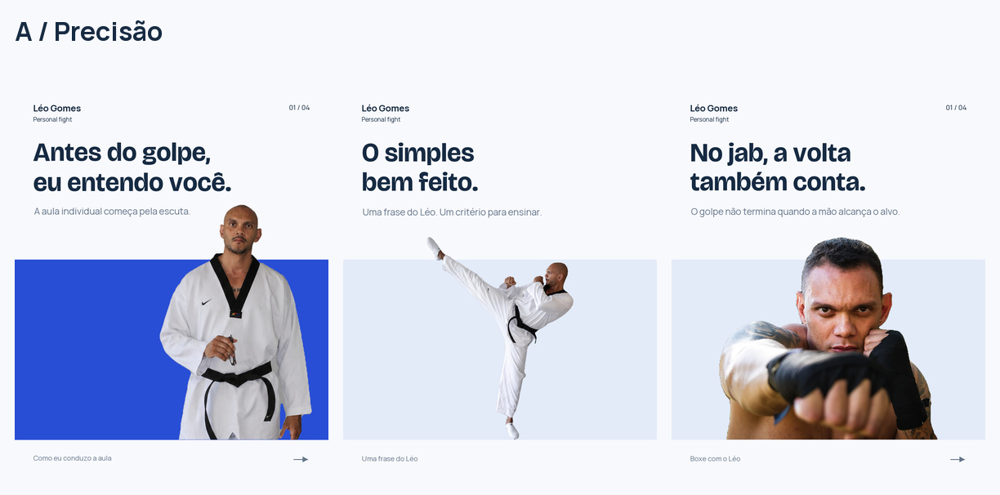
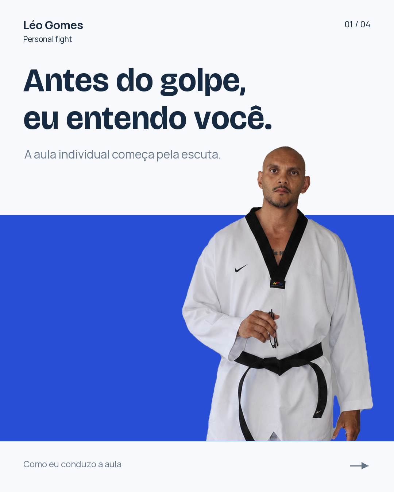
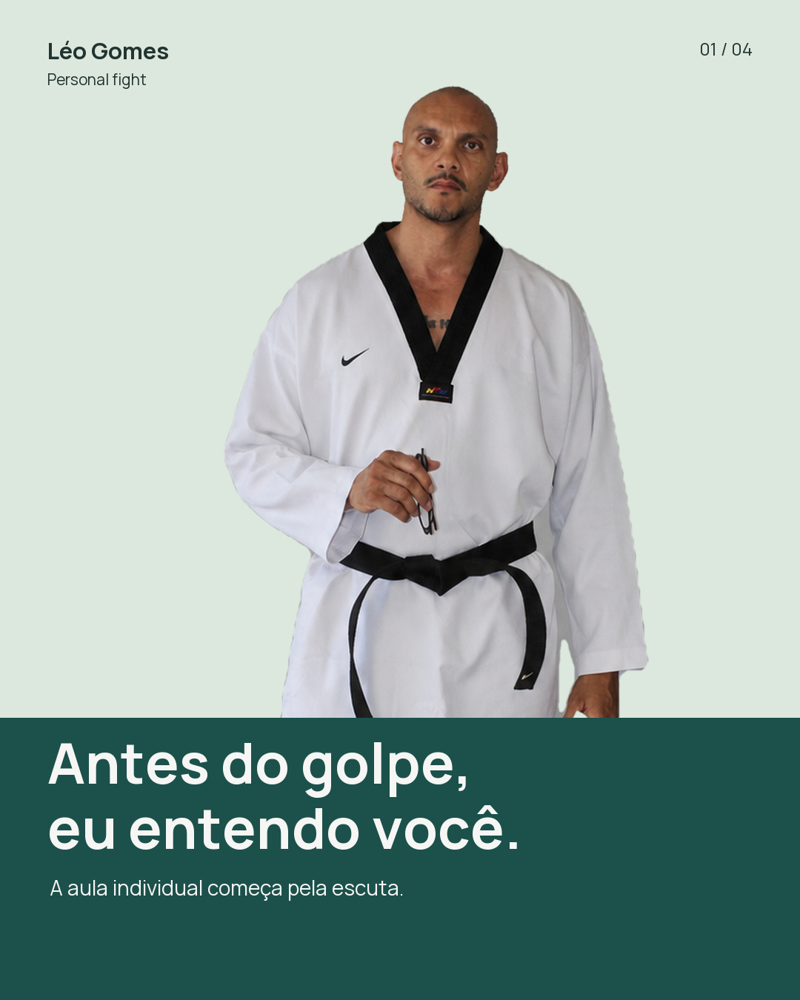
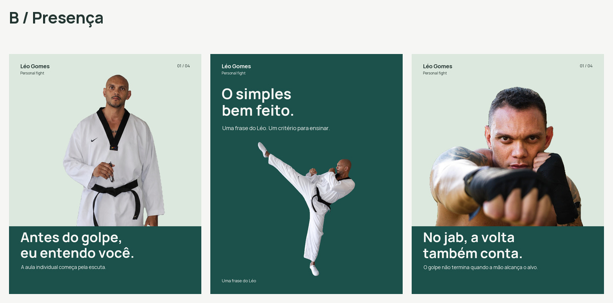
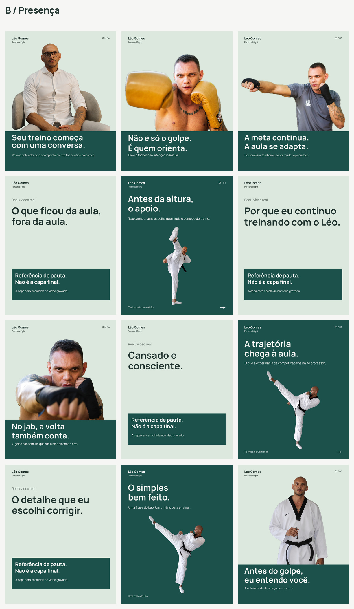

A / Precisão
Azul vivo, branco e uma chamada que abre a peça. Tipografia mais ampla, execução em destaque e desenho gráfico usado para explicar.

Uma nova direção para outubro
A técnica precisa ser visível. O professor também. Duas alternativas para dar mais presença às fotografias, mais clareza aos textos e mais ritmo aos carrosséis.
Estudo para aprovação. Nenhuma identidade foi substituída e nada foi publicado no Instagram.


As alternativas usam as mesmas pautas e fotos para comparar a linguagem visual. São duas versões de um calendário, não 24 publicações.
Azul vivo, branco e uma chamada que abre a peça. Tipografia mais ampla, execução em destaque e desenho gráfico usado para explicar.

Verde-petróleo, fotografia maior e faixa editorial. Uma comunicação mais sóbria, com o professor à frente e a informação sem disputar com ele.

Oito posts estáticos com todas as telas e quatro referências de Reels. Cada peça mantém o seu porquê, a legenda proposta e as necessidades de produção.
Visualizando B / Presença. Em comparação, não aprovado.
Carregando os posts…
Ordem das publicações mais recentes para as primeiras. Os Reels continuam sem capa final até a gravação.

Fotos reais. Os rostos, os corpos e os movimentos não foram recriados. Utilizamos os recortes existentes, com escala proporcional e enquadramento editorial.
Professor, não conteúdo genérico. O jab explica o retorno à guarda e mostra como escolher uma prioridade. O chute explica apoio e controle, sem exigir que um iniciante reproduza a execução avançada.
Execução acompanhada. Datas, captações, aprovações e planos B seguem no planejamento operacional. Esta comparação não cancela essas responsabilidades.
Uma identidade por vez. Depois da escolha, o sistema deve ser aplicado também às reservas e aos Stories. As alternativas ainda dependem de validação técnica e editorial.